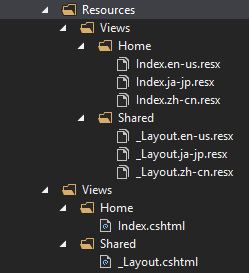

How to achieve a localization web application in ASP.NET Core
How to achieve a localization web application in ASP.NET Core
Introduction
This sample will demonstrates how to set localization of your web site in ASP.NET Core.
Sample prerequisites
.NET Core 1.0 or later version(s). [.NET Core + Visual Studio tooling]
Microsoft Visual Studio 2015 update3 or above. [Visual Studio 2015]
Building the sample
• Open the sample solution “CSLocalizationASPNETCore.sln” using Visual Studio.
• Right click on the project “CSLocalizationASPNETCore” and select Restore packages.

• Press F6 Key or select Build -> Build Solution from the menu to build the sample.
Running the sample
• Open the Sample solution using Visual Studio, then press F5 Key or select Debug -> Start Debugging from the menu.
• When the web application is running, you can see the below page in your browser.

• Choose a language at dropdown list, and click Switch Location button.

• The language will be updated according to your choice.

Using the code
The Resource and Views look like this:

In Startup.cs
public void ConfigureServices(IServiceCollection services)
{
services.AddLocalization(opts => { opts.ResourcesPath = "Resources"; });
services.AddMvc()
.AddViewLocalization(
Microsoft.AspNetCore.Mvc.Razor.LanguageViewLocationExpanderFormat.SubFolder,
opts => { opts.ResourcesPath = "Resources"; }
)
.AddDataAnnotationsLocalization();
services.Configure<RequestLocalizationOptions>(opts =>
{
var supportedCultures = new[]
{
new CultureInfo("en-US"),
new CultureInfo("ja-JP"),
new CultureInfo("zh-CN")
};
opts.DefaultRequestCulture = new Microsoft.AspNetCore.Localization.RequestCulture("en-US");
opts.SupportedCultures = supportedCultures;
opts.SupportedUICultures = supportedCultures;
});
}
// This method gets called by the runtime. Use this method to configure the HTTP request pipeline.
public void Configure(IApplicationBuilder app, IHostingEnvironment env, ILoggerFactory loggerFactory)
{
app.UseRequestLocalization();
app.UseMvc(routes =>
{
routes.MapRoute(name: "default", template: "{controller=Home}/{action=Index}");
});
}
public void ConfigureServices(IServiceCollection services) { services.AddLocalization(opts => { opts.ResourcesPath = "Resources"; }); services.AddMvc() .AddViewLocalization( Microsoft.AspNetCore.Mvc.Razor.LanguageViewLocationExpanderFormat.SubFolder, opts => { opts.ResourcesPath = "Resources"; } ) .AddDataAnnotationsLocalization(); services.Configure<RequestLocalizationOptions>(opts => { var supportedCultures = new[] { new CultureInfo("en-US"), new CultureInfo("ja-JP"), new CultureInfo("zh-CN") }; opts.DefaultRequestCulture = new Microsoft.AspNetCore.Localization.RequestCulture("en-US"); opts.SupportedCultures = supportedCultures; opts.SupportedUICultures = supportedCultures; }); } // This method gets called by the runtime. Use this method to configure the HTTP request pipeline. public void Configure(IApplicationBuilder app, IHostingEnvironment env, ILoggerFactory loggerFactory) { app.UseRequestLocalization(); app.UseMvc(routes => { routes.MapRoute(name: "default", template: "{controller=Home}/{action=Index}"); }); }
In HomeController.cs
public class HomeController : Controller
{
//you can use the localizer in you controller
private readonly IStringLocalizer<HomeController> _localizer;
public HomeController(IStringLocalizer<HomeController> localizer)
{
_localizer = localizer;
}
public IActionResult Index()
{
return View();
}
public IActionResult SetLanguage(string culture, string returnUrl)
{
Response.Cookies.Append(
CookieRequestCultureProvider.DefaultCookieName,
CookieRequestCultureProvider.MakeCookieValue(new RequestCulture(culture)),
new CookieOptions { Expires = DateTimeOffset.UtcNow.AddYears(1) }
);
return LocalRedirect(returnUrl);
}
}
public class HomeController : Controller { //you can use the localizer in you controller private readonly IStringLocalizer<HomeController> _localizer; public HomeController(IStringLocalizer<HomeController> localizer) { _localizer = localizer; } public IActionResult Index() { return View(); } public IActionResult SetLanguage(string culture, string returnUrl) { Response.Cookies.Append( CookieRequestCultureProvider.DefaultCookieName, CookieRequestCultureProvider.MakeCookieValue(new RequestCulture(culture)), new CookieOptions { Expires = DateTimeOffset.UtcNow.AddYears(1) } ); return LocalRedirect(returnUrl); } }
_Layout.cshtml
@using Microsoft.AspNetCore.Builder
@using Microsoft.AspNetCore.Localization
@using Microsoft.AspNetCore.Mvc.Localization
@using Microsoft.Extensions.Options
@inject IViewLocalizer Localizer
@inject IOptions<RequestLocalizationOptions> LocOptions
@{
var cultureItems = LocOptions.Value.SupportedUICultures.ToList();
var currentCulture = Context.Features.Get<IRequestCultureFeature>().RequestCulture;
var sampleTitle = Localizer["Code Sample for localization"];
}
<!DOCTYPE html>
<html>
<head>
<meta name="viewport" content="width=device-width" />
<title>@(ViewBag.Title)_@sampleTitle</title>
</head>
<body>
<h1>@sampleTitle</h1>
<div>
@RenderBody()
</div>
<form action="/Home/SetLanguage">
<input name="returnUrl" type="hidden" value="@Context.Request.Path" />
<select name="culture">
@foreach (var item in cultureItems)
{
<option value="@item.Name" @(currentCulture.Culture.Name == item.Name ? "selected" : "")>
@item.DisplayName
</option>
}
</select>
<button type="submit">Switch Location</button>
</form>
</body>
</html>
@using Microsoft.AspNetCore.Builder @using Microsoft.AspNetCore.Localization @using Microsoft.AspNetCore.Mvc.Localization @using Microsoft.Extensions.Options @inject IViewLocalizer Localizer @inject IOptions<RequestLocalizationOptions> LocOptions @{ var cultureItems = LocOptions.Value.SupportedUICultures.ToList(); var currentCulture = Context.Features.Get<IRequestCultureFeature>().RequestCulture; var sampleTitle = Localizer["Code Sample for localization"]; } <!DOCTYPE html> <html> <head> <meta name="viewport" content="width=device-width" /> <title>@(ViewBag.Title)_@sampleTitle</title> </head> <body> <h1>@sampleTitle</h1> <div> @RenderBody() </div> <form action="/Home/SetLanguage"> <input name="returnUrl" type="hidden" value="@Context.Request.Path" /> <select name="culture"> @foreach (var item in cultureItems) { <option value="@item.Name" @(currentCulture.Culture.Name == item.Name ? "selected" : "")> @item.DisplayName </option> } </select> <button type="submit">Switch Location</button> </form> </body> </html>
Index.cshtml
@using Microsoft.AspNetCore.Mvc.Localization
@inject IViewLocalizer LocOptions
@{
ViewData["Title"] = LocOptions["Home Page"];
}
<h2>@ViewData["Title"]</h2>
@using Microsoft.AspNetCore.Mvc.Localization
@inject IViewLocalizer LocOptions
@{
ViewData["Title"] = LocOptions["Home Page"];
}
<h2>@ViewData["Title"]</h2>
More information
Globalization and localization
Microsoft All-In-One Code Framework is a free, centralized code sample library driven by developers' real-world pains and needs. The goal is to provide customer-driven code samples for all Microsoft development technologies, and reduce developers' efforts in solving typical programming tasks. Our team listens to developers’ pains in the MSDN forums, social media and various DEV communities. We write code samples based on developers’ frequently asked programming tasks, and allow developers to download them with a short sample publishing cycle. Additionally, we offer a free code sample request service. It is a proactive way for our developer community to obtain code samples directly from Microsoft.